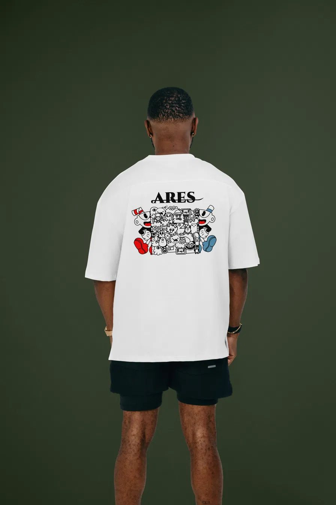
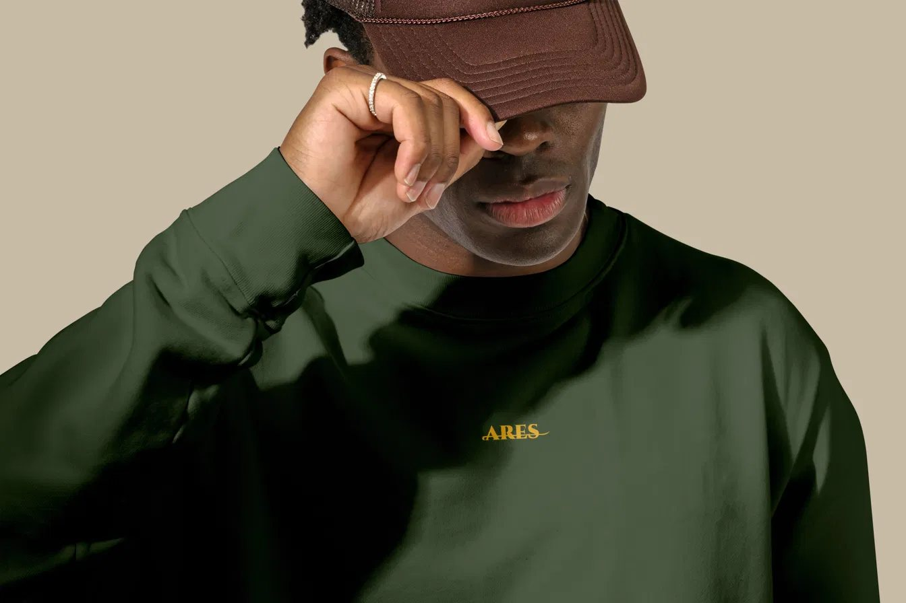
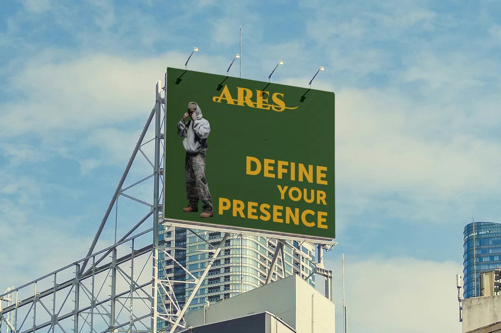

Voor deze opdracht moest ik een logo ontwerpen voor een zelfgekozen merk. Ik koos voor een fictief kledingmerk met de naam ARES. De naam verwijst naar Ares, de Griekse god van de oorlog, en paste daardoor goed bij de uitstraling die ik voor het merk wilde creëren: kracht, doorzettingsvermogen en een sterke aanwezigheid.
Vanuit die betekenis werkte ik het logo verder uit en onderzocht ik hoe het ontwerp op verschillende dragers zou functioneren. Uiteindelijk maakte ik onder andere een T-shirt, sweater en billboard als toepassingen van mijn ontwerp.
Digital Branding
Naamgeving, concept, logo-ontwerp en uitwerking in mockups
2025–2026


